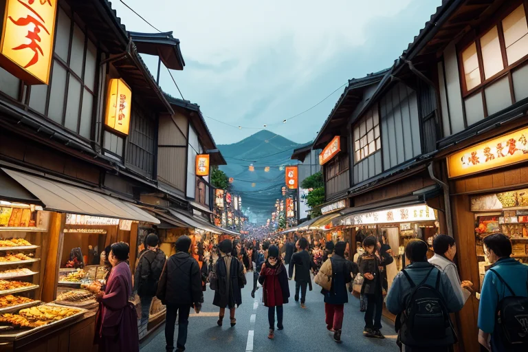
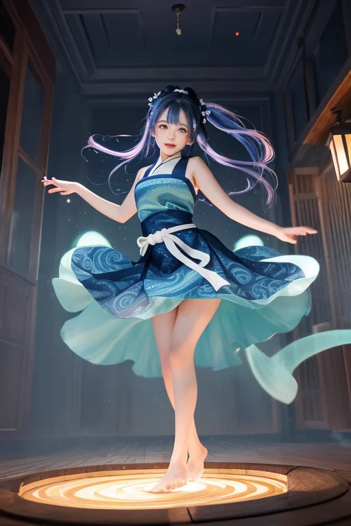
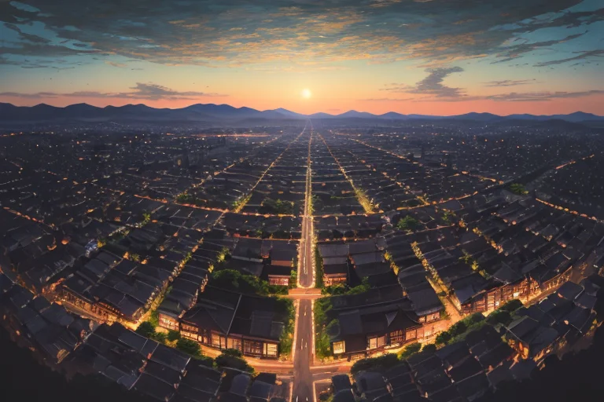
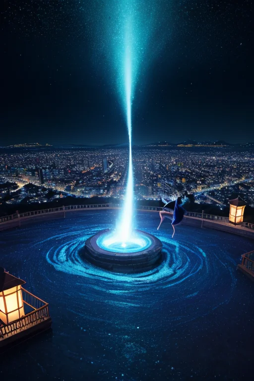
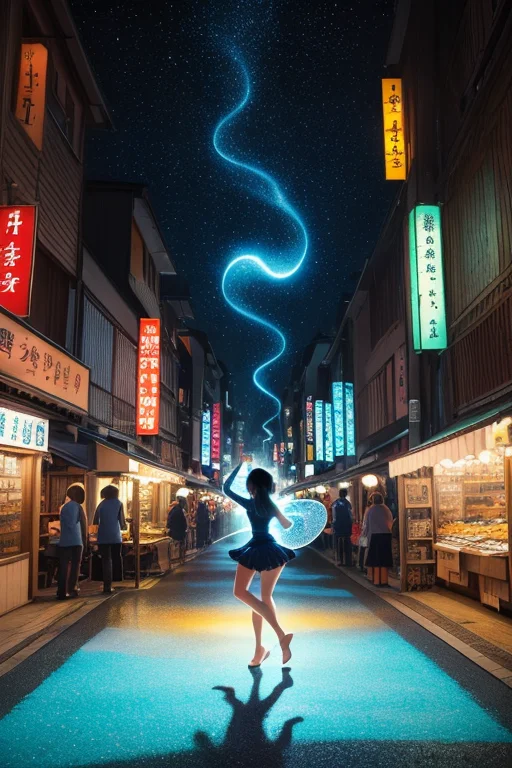

第一章 現実の徳島
あなたはまだ気づいていない。この土地にも、王がいることを。
眉山の麓、賑わう商店街の路地裏。藍染めの暖簾が風に揺れ、すだちの爽やかな香りが通りを流れる。観光客の笑い声、商人の掛け声、皿の触れ合う音。阿波おどり会館から漏れる囃子のリズムが、人の流れと金の流れに拍子を刻む。ここは活気そのものだ。欲望とエネルギーが渦を巻き、すべてを巻き込みながら前に進ませる。
その渦の中心で、一人の女性が立っていた。藍と白のストールを軽く翻し、観光客に笑みを向けながら。彼女の目は、この喧騒の底を、見えない「歪み」の兆しを探るように泳いでいる。人々は彼女を、この町のエネルギッシュな観光協力員だと思っている。誰も、彼女がこの土地に派遣された47人の王の一人、トクシマリア・ヴォルテクスであるとは知らない。
彼女は感じる。地中の微かな軋みを、活気という名の熱狂が覆い隠す、ほんの少しの「ずれ」を。王の役目は英雄ではない。巻き込まれながらも、その流れの中で微調整を行うことだ。

第二章 歪みの兆候
阿波おどり会館の熱気は、夜の帳と共に最高潮に達していた。踊り子たちの足音、三味線の響き、観客の歓声。それは巨大な、生きた渦だった。トクシマリアはその中心で、観光客に踊りの手ほどきをしながら、地中を流れる別のリズムに耳を澄ませる。活気の波の下で、ごく微かに、何かが「ずれ」始めている。
その兆候は、数字の流れにも現れていた。眉山の夜景を望むレストランで、地元の若き経営者がため息をつく。「最近、客足が…昔みたいに安定しないんです」。彼は藍染めのエプロンを無意識に弄っていた。活気という渦は、時に人を飲み込み、時に突然、勢いを弱める。それは経済の歪みであり、人々の不安の地鳴りでもある。
ヴォルテラが彼女の耳元で囁いた。「エネルギー循環に乱れ。微小、だが持続的」。王はうなずく。彼女の目は、踊りの輪の外れで、何も買わずにぶらつく青年の姿を捉えた。その足元の地面に、妖精アワナミが現れ、透明な波紋を広げて地中の状態を探る。歪みはまだ種。だが、この欲望と活気の町で、それは静かに膨らみ始めていた。

第三章 王の葛藤
眉山の頂から町を見下ろす王は、胸に疼く感覚を覚えていた。それは昂揚ではなく、焦りに近い。妖精たちが報告する歪みの種は、人の欲望と直結していた。過剰な投資、膨らむ借金、競争に疲れた心。それらは全て、この町の活気そのものでもある。彼女はそのエネルギーを愛していた。阿波おどりの熱狂も、市場の喧騒も、すべてはこの土地を形作る渦の一部だ。
「抑えるべきか、流すべきか」
ヴォルテラが彼女の肩に止まり、問わなかった問いを浮かべた。王は青年のことを思い出す。あの空虚な目は、渦に巻き込まれ、立ち上がる術を忘れた者の目だ。守護とは、渦を止めることではない。流れの中で溺れさせない、ほんの少しの調整だ。だが、その一手が、この熱気ある生態系を損なわないか。
藍染めの深い色が夕日に照らされる。彼女は決めた。介入は最小限に。青年の足元の歪みを、そっと整えるだけに。救うのは王ではなく、彼自身が立つその瞬間でなければならない。

第四章 妖精との対話
眉山の頂から見下ろす徳島市の夜景は、金と藍の渦だった。ヴォルテラは王の肩にふわりと座り、揺れるネオンを指さした。
「あれが商いの本質です。欲望の放出と吸収。ただの循環ではありません、『舞』です」
彼女の声は、かすかに渦潮の轟きを帯びていた。
「人は皆、何かに巻き込まれます。金銭、人間関係、流行…それがこの町のエネルギー。問題は、巻き込まれること自体ではない。流れに任せて踊りながら、自分という軸を見失うかどうか」
ふと、彼女の目が遠くの路地裏に注がれた。あの青年が、小さな露店で藍染めのハンカチを並べている。表情はまだ硬いが、地面にしっかりと立っている。
「あの子は、溺れかけた渦の中で、ようやく足の裏で地面を感じ始めました。商いとは、結局、己の『立つ』場所を見つけるための舞踏かもしれませんね」
王は黙ってうなずく。救済は派手な介入ではない。流れの中で、ふと足がつく小さな岩場を用意すること。それだけが、この騒がしい王国の守護の形だった。

第五章 微調整と余韻
眉山の山頂から、夜の徳島市街が光の渦のように広がっていた。トクシマリア・ヴォルテクスは、その中心に立つ。彼女の目には、街を流れる無数の「線」が見える。人の動き、金の流れ、偶然の交差点。彼女は指先をわずかに動かす。阿波おどり会館を出た観光客の一群の進路が、ほんの数度変わる。その結果、彼らは路地裏で営業を始めたばかりの青年の露店の前を通り過ぎる。
青年は、藍染めのハンカチを手に取る客に、小声で説明を始めた。言葉はぎこちないが、一つひとつが確かだった。王は、その場に生まれた小さな「流れ」を感じた。取引という名の、新たな接続。それは大地の歪みを直すほどの力はない。しかし、一人の人間が、経済という荒波の中で、かすかに地に足をつける瞬間を作るには十分だった。
王は目を閉じた。感情という名の余韻が、彼女の内側をゆっくりと巡る。守護とは、巨大な災害を前に無力であることを認めた上での、ささやかな均衡の工作である。誰にも気づかれない微調整の連続が、今日もこの列島の、この王国の、ざわめきを少しだけ和らげている。
あなたの町にも、王がいる。